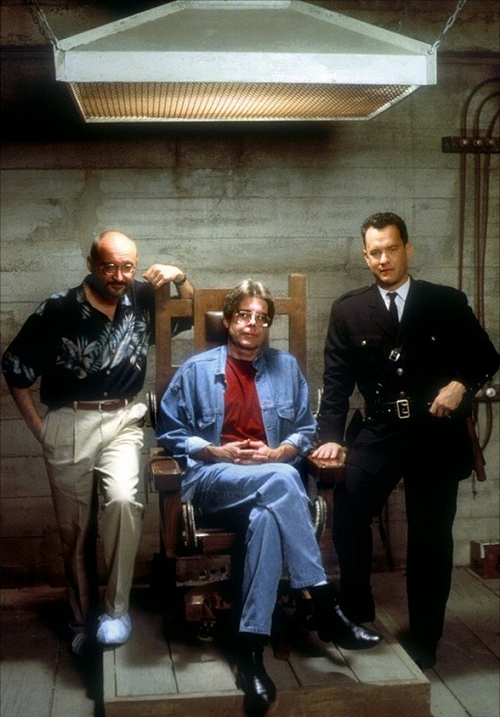

Ο Stephen Edwin King γεννήθηκε στο Πόρτλαντ του Μέιν το 1947, δεύτερος γιος του Donald και της Nellie Ruth Pillsbury King. Αφού οι γονείς του χώρισαν όταν ο Stephen ήταν μικρός, αυτός και ο μεγαλύτερος αδελφός του, ο David, μεγάλωσαν με τη μητέρα του. Πέρασε μερικά κομμάτια της παιδικής του ηλικίας στο Fort Wayne της Ιντιάνα, όπου βρισκόταν η οικογένεια του πατέρα του τη συγκεκριμένη περίοδο, και στο Στράτφορντ, Κονέκτικατ. Όταν ο Stephen ήταν έντεκα, η μητέρα του έφερε τα παιδιά της πίσω στο Durham, Maine. Οι γονείς της, Guy και Nellie Pillsbury, ηταν πλέον ανίκανοι να αυτοεξυπηρετηθούν λόγω της προχωρημένης ηλικίας τους, και η Ruth πείστηκε από τις αδελφές της να αναλάβει τη φυσική φροντίδα του ηλικιωμένου ζευγαριού. Άλλα μέλη της οικογένειας παραχώρισαν ένα μικρό σπίτι στο Durham και οικονομική υποστήριξη. Μετά το θάνατο των παππούδων του Stephen, η κυρία King βρήκε δουλειά στις κουζίνες του Pineland, ενός γειτονικού ιδρύματος για τους ψυχικά διαταραγμένους.
Ο Stephen πήγε στη σχολή γραμματικής στο Durham, και στη συνέχεια στο λύκειο Falls, αποφοίτώντας το 1966. Από το δεύτερο έτος του στο Πανεπιστήμιο του Maine στο Orono και μετά, έγραφε μια εβδομαδιαία στήλη για τη σχολική εφημερίδα THE MAINE CAMPUS. Ήταν επίσης ενεργός στη φοιτητική πολιτική, όντας μέλος της Γερουσίας των Φοιτητών. Κατέληξε να υποστηρίζει το αντιπολεμικό κίνημα, καλλιεργόντας την άποψη ότι ο πόλεμος στο Βιετνάμ ήταν αντισυνταγματικός. Αποφοίτησε από το Πανεπιστήμιο του Maine το 1970, με πτυχίο στα Αγγλικά, και έχοντας τα προσόντα να διδάξει σε επίπεδο γυμνασίου. Μία γενική ιατρική εξέταση αμέσως μετά την αποφοίτηση του τον έδειξε ακατάλληλο για στρατιωτική υπηρεσία, λόγω υψηλής αρτηριακής πίεσης, περιορισμένης όρασης, επίπεδων ποδιών και τρυπημένων τυμπάνων αυτιών.
Αυτός και η Tabitha Spruce παντρεύτηκαν τον Ιανουάριο του 1971. Γνώριστηκαν στην βιβλιοθήκη Fogler στο Πανεπιστήμιο του Maine, όπου και οι δύο εργάστηκαν ως φοιτητές. Καθώς ο Stephen δεν μπόρεσε να βρει άμεση ενασχόληση ως δάσκαλος, οι Kings έζησαν με τον μισθό που έβγαζε ως εργάτης σε βιομηχανικό πλυντήριο, το φοιτητικό δάνειο της Tabitha και κάνοντας πολλή οικονομία. Περιστασιακά το εισόδημα αυξανόταν, όταν ο King πουλούσε τις ιστορίες του σε ανδρικά περιοδικά.
Ο Stephen πούλησε για πρώτη φορά επαγγελματικά έργο του ("The Glass Floor") στο Startling Mystery Stories το 1967. Καθ 'όλη τη διάρκεια των πρώτων ετών του γάμου του, συνέχισε να πουλά ιστορίες σε ανδρικά περιοδικά. Πολλά από αυτά συγκεντρώθηκαν αργότερα στη συλλογή Night Shift ή εμφανίστηκαν σε άλλες ανθολογίες.
Το φθινόπωρο του 1971, ο Stephen άρχισε να παραδίδει μαθήματα αγγλικών στο Hampden Academy, το δημόσιο γυμνάσιο του Hampden. Συγγράφοντας το βράδυ και μετά τα σαββατοκύριακα, συνέχισε να παράγει διηγήματα και να δουλεύει σε μυθιστορήματα.
Την άνοιξη του 1973, η Doubleday & Co. δέχτηκε το μυθιστόρημα Carrie για δημοσίευση. Την Ημέρα της Μητέρας εκείνης της χρονιάς, ο Stephen έμαθε από τον νέο συντάκτη του, Bill Thompson, ότι μια μεγάλη πώληση χαρτόδετου χαρτιού θα του εξασφάλιζε τα μέσα για να εγκαταλείψει τη διδασκαλία, και να αρχίσει να γράφει ως πλήρη απασχόληση.
Στο τέλος του καλοκαιριού του 1973, οι Kings μετέφεραν την οικογένειά τους στο νότιο Maine λόγω της ύφεσης της υγείας της μητέρας του Stephen. Νοίκιασαν μία εξοχική κατοικία στη λίμνη Sebago στο Βόρειο Windham για το χειμώνα, όπου ο Stephen έγραψε το δεύτερο δημοσιευμένο μυθιστόρημά του, αρχικά με τίτλο 'Second Coming' και μετά 'Jerusalem's Lot', πριν γίνει 'Salem's Lot', σε ένα μικρό δωμάτιο του γκαράζ. Κατά τη διάρκεια αυτής της περιόδου, η μητέρα του Stephen πέθανε από καρκίνο, σε ηλικία 59 ετών.
Το βιβλίο Carrie δημοσιεύθηκε την άνοιξη του 1974. Εκείνο το φθινώπορο, οι Kings άφησαν το Maine για το Bolder στο Colorado. Έζησαν εκεί για κάτι λιγότερο από ένα χρόνο, κατά τη διάρκεια του οποίου Ο Stephen έγραψε το The Shining. Επιστρέφοντας στο Maine το καλοκαίρι του 1975, οι Kings αγόρασαν ένα σπίτι στην περιοχή Lakes. Σε αυτό, Ο Stephen ολοκλήρωσε τη σύνταξη του The Stand.
Τα βιβλία του έχουν πουλήσει συνολικά περισσότερα από 350 εκατομμύρια αντίτυπα και πολλά από αυτά έχουν γίνει κινηματογραφικές ταινίες, μίνι σειρές, τηλεοπτικές σειρές και κόμικς.
Animation με αποσπάσματα από διάφορες συνεντεύξεις του, τα οποία πραγματεύονται μεταξύ άλλων: την παιδικότητα και την σύνδεσή της με το υπερφυσικό, τον ρόλο του υποσυνείδητου στις "ιστορίες του μακάβριου", και τον φόβο για τον θάνατο.